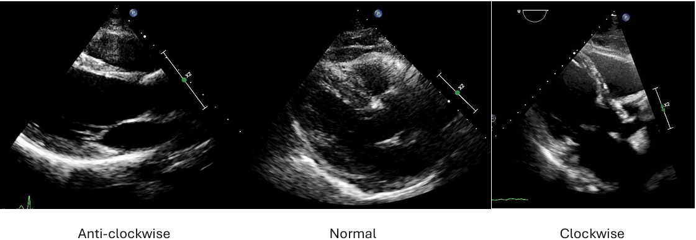

Excessive clockwise rotation is a common issue in the PLAX echo view. We are training the AI to understand PLAX image rotation by arranging images in order—from the most anticlockwise (rare), through the middle zone of acceptability, to the most clockwise.

This video explains how to rank the images based on the degree of PLAX rotation using unity imaging.net application.
Start Labelling